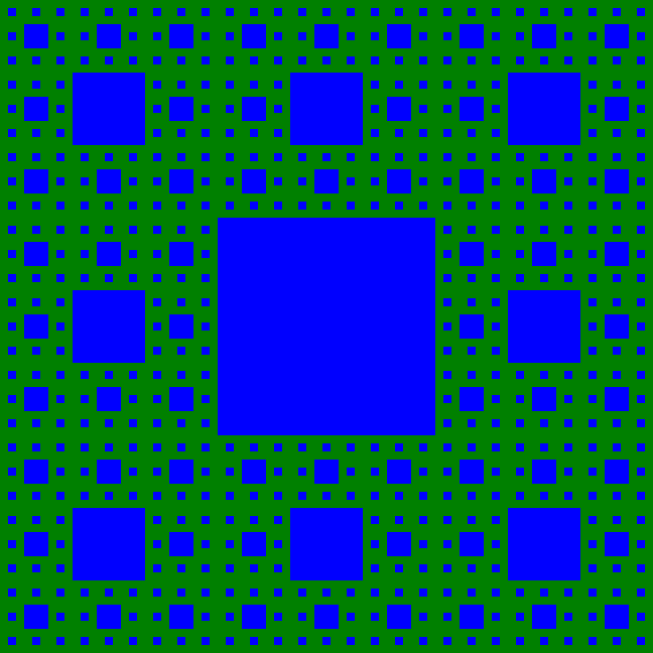

Fraktaler og datastrukturer
Fraktaler og datastrukturer
Skrevet av: Teodor Heggelund
Introduksjon
En fraktal er en geometri med et mønster som gjentar seg selv inne i seg selv. Høres ikke det rart ut? I denne oppgaven skal vi lage våre egne.
Her er Sierpinski-teppet, som er en fraktal:
Steg 1: Hvordan fungerer Sierpinski?
Fraktaler følger tre regler:
-
Startregelen gir hvor vi skal starte. Med en firkant? En trekant? En strek?
-
Tegneregelen gir hvordan vi skal tegne på nivået vi er. Fargelegge en bit av firkanten? Splitte en strek i to?
-
Rekursjonsregelen deler opp figuren vår i mindre biter, som vi kjører på nytt i. Lager firkanten vi tegnet nye firkanter? Lager streken vi tegnet nye streker? Gjenta for hver strek.
 Sjekkliste
Sjekkliste
Gå til Wikipedia-artikkelen til Sierpinski-teppet. Se på animasjonen.
Se på figurene under avsnittet Process. Ser du at noe gjentar seg?
Steg 2: Tegne kvadrater med SVG
Nå skal vi begynne å tegne kvadratene teppet:
Ett kvadrat kan vi tegne slik:
import Svg exposing (svg, rect)
import Svg.Attributes exposing (width, height, viewBox, fill, x, y, width, height)
main =
svg
[ width "500", height "500", viewBox "0 0 27 27" ]
[ rect [ x "0", y "0", width "27", height "27", fill "blue" ] - [ ]
, rect [ x "9", y "9", width "9", height "9", fill "green" ] - [ ]
]
Sjekkliste
Steg 3: Datastrukturer
Kan du telle hvor mange kvadrater det finnes i Sierpinski-teppet? Ikke jeg heller. Hmm, gidder vi da å skrive de maaaange linjene SVG for hånd? Nei, vi programmerer!
Vi skal nå representere kvadrater med Records i Elm. Records lar oss lage våre egne typer. Vi kommer til å lage en type for punkter og en type for kvadrater.
Sjekkliste
Nå skal du få prøve å lese Elm sine egne læreressurser.
Vi legger til en liten snutt i programmet vårt:
import Html exposing (div, text, h1)
import Svg exposing (svg, rect)
import Svg.Attributes exposing (width, height, viewBox, fill, x, y, width, height)
myPoint =
{ x = 9
, y = 3
}
main =
div []
[ h1 [] [ text (toString myPoint) ]
, svg
[ width "500", height "500", viewBox "0 0 27 27" ]
[ rect [ x "0", y "0", width "27", height "27", fill "blue" ] - [ ]
, rect [ x "3", y "3", width "3", height "3", fill "green" ] - [ ]
]
]
Nå kan du endre toString myPoint for å skrive ut noe annet.
Sjekkliste
Nå skal vi ta steget videre og lage våre egne punkter.
Husk! Du kan bruke linjen [ h1 [] [ text (toString yz) ] til å teste verdier.
Her finnes det allerede en Point-type vi kan bruke. Har du definert myPoint og yourPoint på samme måte som det gjøres i guiden?
-
-- myPoint : Point betyr at myPoint skal være av type Point myPoint : Point myPoint = -- din tidligere løsning -- yourPoint : Point betyr at yourPoint skal være av type Point yourPoint : Point yourPoint = -- din tidligere løsning
Klager kompilatoren? Hvorfor/hvorfor ikke? Om den klager betyr det ikke at du har gjort noe feil. Det bare at du og guiden lagde punkter på forskjellig måte.
-
myPoint : Point3D -- ...
Dette får vi bruk for!
Steg 4: Datastrukturer i datastrukturer
I steg 3 bygget vi opp datastruktren Point fra to tall av typen Float.
Nå skal vi bruke får egen type, Point, til å bygge opp ett kvadrat.
Desimaltall
Obs! Her kommer det matte. Viktig for oss nå:
Kommatall i Elm har typen Float.
Dette har en forklaring:
Desimaltall i Elm har typen Float. Float er kort for Floating point number, som på norsk er flyttall. Disse kalles flyttall fordi de har flytende presisjon. Det betyr at vi kan ha et fast antall siffer med nøyaktighet. Vi kan også lage veldig store tall, som 1000 * 1000 * 1000 * 1000 * 10000
Sjekkliste
Nå skal vi tegne kvadratet!
viewSquare square = -- ...
Obs! Når vi tegner kvadrater må vi bruke en farge. En måte å løse det på er å ha en color : String-attributt på Square.
Her er hvordan jeg bruker min viewSquare:
start =
{ corner = { x = 0.0
, y = 0.0
}
, width = 27.0
, color = "blue"
}
center =
{ corner = { x = 9.0
, y = 9.0
}
, width = 9.0
, color = "green"
}
main =
div []
[ h1 [] [ text (toString start)
, text (toString center)
]
, svg
[ width "500", height "500", viewBox "0 0 27 27" ]
[ viewSquare start
, viewSquare center
]
]
Dette blir seende slik ut på min PC:
Nå har vi startregelen i boks! Den er kvadratet start!
Steg 5: Senterkvadrat og let
Vi kan sette binde navn med let. Her binder vi age til alderen vi regner ut:
describeAge yearNow yearBorn =
let age = yearNow - yearBorn
in "The age is " ++ (toString age)
Vi kan binde flere navn som kan være avhengig av hverandre:
describeHalfAge yearNow yearBorn =
let age = yearNow - yearBorn
halfAge = age / 2
in "Half the age is " ++ (toString halfAge)
Sjekkliste
Nå skal vi tilbake til fraktalene våre, vi skal lage den grønne firkanten i sentrum. Denne gangen med kode!
Her er en start:
centerSquare : Square -> Square
centerSquare old =
let x =
Du skal kunne bruke den slik:
> centerSquare
<function> : Utils.Square -> Utils.Square
> centerSquare start
{ color = "blue", width = 9, corner = { x = 9, y = 9 } } : Utils.Square
... hva må x-verdien være om det nye kvadratet skal være i sentrum av det forrige?
Får du til? Prøv selv først.
Slik ser min ut:
mkSquare color width corner =
{ color = color
, width = width
, corner = corner
}
blueSquare = mkSquare "blue"
centerSquare : Square -> Square
centerSquare old =
let x = old.corner.x + old.width/3
y = old.corner.y + old.width/3
w = old.width / 3
in blueSquare w (mkPoint x y)
Steg 6: Funksjoner fra List og String
List.map kjører en funksjon på hvert element i en liste. Eksempel:
> add1 x = x + 1
<function> : number -> number
> List.map add1 [10, 20, 30]
[11,21,31] : List number
> times2 x = x * 2
<function> : number -> number
> List.map times2 [10, 20, 30]
[20,40,60] : List number
Sjekkliste
List.range kan lage en liste med tall. Eksempel:
> List.map toString (List.range 1 4)
["1","2","3","4"] : List String
> List.range 5 10
[5,6,7,8,9,10] : List Int
> List.range 0 3
[0,1,2,3] : List Int
["0","1","2","3","4","5","6","7","8","9","10","11","12","13","14"
,"15","16","17","18","19","20","21","22","23","24","25","26","27"
,"28","29","30"]
Vi innfører enda en nyttig funksjon: String.join. Denne bygger opp tekst fra en liste.
> sayTo 10
"1 og 2 og 3 og 4 og 5 og 6 og 7 og 8 og 9 og 10" : String
> sayTo 3
"1 og 2 og 3" : String
Bra! Gi deg selv en klapp på skulderen.
Steg 7: Kvadrater langs kanten
Nå skal vi finne kvadratene langs kanten. Hvor mange blir det? Tell de røde:
Obs! Denne er en utfording. Ta deg god tid.
Sjekkliste
> start
{ color = "green", width = 729, corner = { x = 0, y = 0 } } : Utils.Square
> borderSquares start
[{ color = "blue", width = 243, corner = { x = 0, y = 0 } }
,{ color = "blue", width = 243, corner = { x = 243, y = 0 } }
,{ color = "blue", width = 243, corner = { x = 486, y = 0 } }
,{ color = "blue", width = 243, corner = { x = 0, y = 243 } }
,{ color = "blue", width = 243, corner = { x = 486, y = 243 } }
,{ color = "blue", width = 243, corner = { x = 0, y = 486 } }
,{ color = "blue", width = 243, corner = { x = 243, y = 486 } }
,{ color = "blue", width = 243, corner = { x = 486, y = 486 } }]
: List Utils.Square
Får du til? Prøv selv først.
Slik ser min ut:
borderSquares : Square -> List Square
borderSquares old =
let additions = [ (0,0) -- First row
, (1,0)
, (2,0)
, (0,1) -- Second row
, (2,1)
, (0,2) -- Third row
, (1,2)
, (2,2)
]
w = old.width / 3
mkBorderSquare (fx,fy) =
let x = old.corner.x + w*fx
y = old.corner.y + w*fy
in blueSquare w (mkPoint x y)
in List.map mkBorderSquare additions
Stopp! Hva var det vi skulle igjen?
Nivå 1 har vi klart:
Nivå 2 har vi også klart når vi har gjort Steg 7:
Men videre blir det vanskeligere. Hvordan skal vi få til steg 3 og steg 4 på en elegant måte?
Nivå 3:
Nivå 4:

Først lager vi én firkant. Så vil vi lage de åtte små firkanene som følger denne ene. Så vil vi for hver av de åtte nye gjøre det samme! Da får vi 8*8=64 nye små firkanter. Så vil vi igjen for hver av de 64 nye firkantene tegne åtte nye firkanter.
I nivå 1 lager vi 1 ny firkant.
I nivå 2 lager vi 8 nye firkanter.
I nivå 3 lager vi 8 * 8 = 64 nye firkanter.
Bruk elm repl til å regne ut disse:
Klarer du å se et mønster?
Steg 8: concat og map
Vi skal trene litt før vi går videre.
Sjekkliste
-
module Tall exposing (..) hei = "Hei!" -
---- elm-repl 0.18.0 ----------------------------------------------------------- :help for help, :exit to exit, more at <https://github.com/elm-lang/elm-repl> -------------------------------------------------------------------------------- > import Tall exposing (..) > hei "Hei!" : String
Får du til? Bra!
Nå skal vi prøve oss på et problem fra matematikken:
Er det mulig å liste opp alle desimaltall mellom 0 og 1?
... gitt at vi har uendelig god tid. Hmm! La oss prøve, men begrense oss på antall desimaler i starten.
Dette kunne vært første steg:
0.0
0.1
0.2
0.3
0.4
0.5
0.6
0.7
0.8
0.9
Sjekkliste
-
> sifre ["0","1","2","3","4","5","6","7","8","9"] : List String
Prøv selv først!
Her er hva jeg gjorde:
sifre =
let nullTilNi = List.range 0 9
in List.map toString nullTilNi
-
> ettSifferBak <function> : String -> List String > ettSifferBak "0." ["0.0","0.1","0.2","0.3","0.4","0.5","0.6","0.7","0.8","0.9"] : List String > ettSifferBak "tull" ["tull0","tull1","tull2","tull3","tull4","tull5","tull6","tull7","tull8","tull9"] : List String
Slik gjorde jeg det:
ettSifferBak start =
let begynnMedStart slutt = start ++ slutt
in List.map begynnMedStart sifre
Nå kommer trikset for å gå dypere: For hver mulige begynnelse må vi lage alle løsninger, og slå sammen disse.
> sifreAvLengde 0 ""
[""] : List String
> sifreAvLengde 0 "0."
["0."] : List String
> sifreAvLengde 1 "0."
["0.0","0.1","0.2","0.3","0.4","0.5","0.6","0.7","0.8","0.9"] : List String
> sifreAvLengde 1 "1."
["1.0","1.1","1.2","1.3","1.4","1.5","1.6","1.7","1.8","1.9"] : List String
> sifreAvLengde 2 "0."
["0.00","0.01","0.02","0.03","0.04","0.05","0.06","0.07","0.08","0.09","0.10","0.11","0.12","0.13","0.14","0.15","0.16","0.17","0.18","0.19","0.20","0.21","0.22","0.23","0.24","0.25","0.26","0.27","0.28","0.29","0.30","0.31","0.32","0.33","0.34","0.35","0.36","0.37","0.38","0.39","0.40","0.41","0.42","0.43","0.44","0.45","0.46","0.47","0.48","0.49","0.50","0.51","0.52","0.53","0.54","0.55","0.56","0.57","0.58","0.59","0.60","0.61","0.62","0.63","0.64","0.65","0.66","0.67","0.68","0.69","0.70","0.71","0.72","0.73","0.74","0.75","0.76","0.77","0.78","0.79","0.80","0.81","0.82","0.83","0.84","0.85","0.86","0.87","0.88","0.89","0.90","0.91","0.92","0.93","0.94","0.95","0.96","0.97","0.98","0.99"]
: List String
Slik gjorde jeg det:
sifreAvLengde n start =
if n == 0
-- Hvis vi ikke vil ha flere tall, gir vi tilbake kun hva vi har.
then [start]
else
let
-- Liste over alle de nye startene for neste nivå
starter = ettSifferBak start
-- Funksjon som tar inn en start og lager alle sluttene.
-- Hvorfor bruker vi n-1? Hva skjer om vi bruker n i stedet?
fortsett nyStart = sifreAvLengde (n-1) nyStart
-- Lager listene med fortsettelser for 0, 1, 2, ..., i hver sin liste
fortsettelser = List.map fortsett starter
-- Slår sammen fortsettelsene i én liste
in List.concat fortsettelser
> desimaler 0
["0."] : List String
> desimaler 1
["0.0","0.1","0.2","0.3","0.4","0.5","0.6","0.7","0.8","0.9"] : List String
> desimaler 2
["0.00","0.01","0.02","0.03","0.04","0.05","0.06","0.07","0.08","0.09","0.10","0.11","0.12","0.13","0.14","0.15","0.16","0.17","0.18","0.19","0.20","0.21","0.22","0.23","0.24","0.25","0.26","0.27","0.28","0.29","0.30","0.31","0.32","0.33","0.34","0.35","0.36","0.37","0.38","0.39","0.40","0.41","0.42","0.43","0.44","0.45","0.46","0.47","0.48","0.49","0.50","0.51","0.52","0.53","0.54","0.55","0.56","0.57","0.58","0.59","0.60","0.61","0.62","0.63","0.64","0.65","0.66","0.67","0.68","0.69","0.70","0.71","0.72","0.73","0.74","0.75","0.76","0.77","0.78","0.79","0.80","0.81","0.82","0.83","0.84","0.85","0.86","0.87","0.88","0.89","0.90","0.91","0.92","0.93","0.94","0.95","0.96","0.97","0.98","0.99"]
: List String
I sifreAvLengde lagde vi først alle resultatene i hver sin liste med List.map, før vi slo listene sammen med List.concat. Her har vi skrevet om koden litt:
sifreAvLengde n start =
if n == 0
-- Hvis vi ikke vil ha flere tall, gir vi tilbake kun hva vi har.
then [start]
else
let
-- Liste over alle de nye startene for neste nivå
starter = ettSifferBak start
-- Funksjon som tar inn en start og lager alle sluttene.
-- Hvorfor bruker vi n-1? Hva skjer om vi bruker n i stedet?
fortsett nyStart = sifreAvLengde (n-1) nyStart
-- Slår sammen fortsettelsene i én liste
in List.concat (List.map fortsett starter)
List.concat (List.map funksjon liste) er noe vi ser ofte. Derfor finnes funksjonen concatMap som kjører List.concat på resultatet av en List.map. Da kan vi korte ned litt til:
sifreAvLengde n start =
if n == 0
-- Hvis vi ikke vil ha flere tall, gir vi tilbake kun hva vi har.
then [start]
else
let
-- Liste over alle de nye startene for neste nivå
starter = ettSifferBak start
-- Funksjon som tar inn en start og lager alle sluttene.
-- Hvorfor bruker vi n-1? Hva skjer om vi bruker n i stedet?
fortsett nyStart = sifreAvLengde (n-1) nyStart
-- Slår sammen fortsettelsene i én liste
in List.concatMap fortsett starter
Hint: 0.0-0.9 blir 10 tall. 0.00 til 0.99 blir ...? Hva med 0.00000 til 0.99999?
Har du hørt om ++?
++ kan slå sammen tekst:
> "Hei " ++ "på deg"
"Hei på deg" : String
++ kan også slå sammen lister:
> [1,2,3] ++ [4,5,6]
[1,2,3,4,5,6] : List number
Steg 9: Så mange nivåer vi vil!
Nå skal vi bruke teknikken fra Steg 8 til å komme til bunns i fraktalen vår.
Sjekkliste
---- elm-repl 0.18.0 -----------------------------------------------------------
:help for help, :exit to exit, more at <https://github.com/elm-lang/elm-repl>
--------------------------------------------------------------------------------
> import Main exposing (..)
> start
{ color = "green", width = 729, corner = { x = 0, y = 0 } } : Main.Square
> generateCenterSquares 0 start
[] : List Main.Square
> generateCenterSquares 1 start
[{ color = "blue", width = 243, corner = { x = 243, y = 243 } }]
: List Main.Square
> generateCenterSquares 2 start
[ { color = "blue", width = 243, corner = { x = 243, y = 243 } },
{ color = "blue", width = 81, corner = { x = 81, y = 81 } },
{ color = "blue", width = 81, corner = { x = 324, y = 81 } },
{ color = "blue", width = 81, corner = { x = 567, y = 81 } },
{ color = "blue", width = 81, corner = { x = 81, y = 324 } },
{ color = "blue", width = 81, corner = { x = 567, y = 324 } },
{ color = "blue", width = 81, corner = { x = 81, y = 567 } },
{ color = "blue", width = 81, corner = { x = 324, y = 567 } },
{ color = "blue", width = 81, corner = { x = 567, y = 567 } }
]
: List Main.Square
Gikk det greit? Her er slik jeg gjorde det, og hvordan jeg bruker generateCenterSquares i main:
generateCenterSquares : number -> Square -> List Square
generateCenterSquares level source =
if level == 0 then []
else let children = List.concatMap (generateCenterSquares (level - 1)) (borderSquares source)
in [centerSquare source] ++ children
main =
svg
[ width "100%", viewBox "0 0 729 729" ]
( [viewSquare start] ++
List.map viewSquare (generateCenterSquares 3 start)
)
Forbedre denne siden
Funnet en feil? Kunne noe vært bedre?
Hvis ja, vennligst gi oss tilbakemelding ved å lage en sak på Github eller fiks feilen selv om du kan. Vi er takknemlige for enhver tilbakemelding!